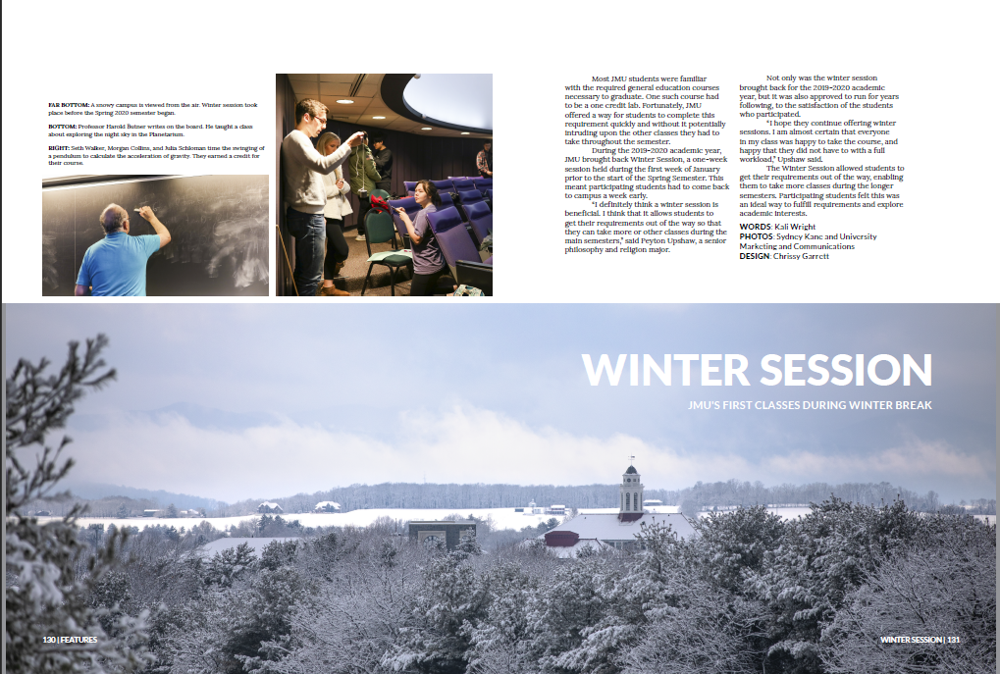
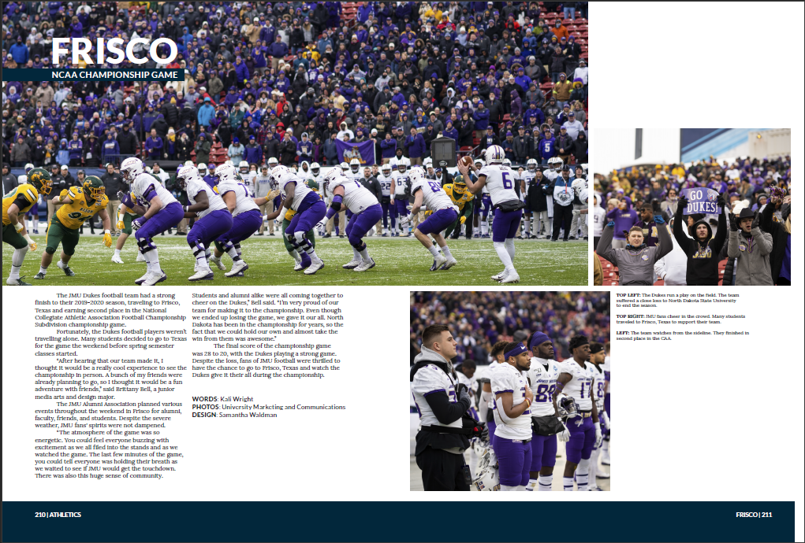

My name is Jessica Wright, but I normally go by my middle name Kali, pronounced like "Kay-lee". I am an imaginative creator, an avid reader, and an idealistic dreamer. I graduated from James Madison University (JMU) in May of 2021 with a Bachelor of Science in Media Arts and Design (SMAD) with a concentration in Interactive Design. My experience while earning this degree established me with a skillset in user experience design, as my electives in the SMAD department earned me experience in social marketing. While at JMU I worked as a writer and then copy editor for JMU's yearbook, The Bluestone, enabling me to retain and hone my love and skills in reading and writing. Now that I have moved on from my days of being a student, I would like to utilize these skillsets in a career that I am able to learn and grow with.
This PDF follows the process used by my partner and I to plan out a social networking app titled "GUILD". The report includes our design process, including our user research, personas, scenarios, storyboards, and design requirements as well as our design solutions, which include sketches, paper prototype and prototype testing, and our low and high fidelity prototypes.
This project required me to make a "Top 5" list of my choosing, using Bootstrap v4.4.1. I decided to use a scrolling navigation layout to display what I considered the top 5 webtoons of the time being featured on the Webtoon app, the English version of the webtoon publishing portal by Naver Corporation.
This project required me to take a website or mobile app and explain how it could be better redesigned for users. The website was meant to look similar to an online article, modeled after this UX case study done by Bex Wise for UX Collective.
Programs used: Sublime Text 3 (html,css), Adobe Photoshop.
This website features tips on living more sustainably each day, no matter what the day entails. The website explains why it is important to make a conscious effort to live more sustainably, features tips in list format for living more sustainably, and offers further resources for learning to live more sustainably.
Programs used: Sublime Text 3 (html,css), Bootstrap v4.4.1, Adobe PhotoShop.
This website is a rough prototype of a shipping dashboard, used to show ways in which data visualisation could be helpful for a number of scenarios using p5.js, a JavaScript library.
Programs used: Sublime Text 3 (html,css), OpenProcessing (p5.js)
This project was a part of my Business and Management of Digital Media class at JMU, and required me to use skills relating to both UX design as well as social marketing. I conducted research, created moodboards, user personas, wireframes, and a digital mockup like I had in previous UX related classes. However, I also had to take into account business perspectives I had not previously, such as search engine optimization, keyword analysis and distribution, and marketing and advertising strategies.
Programs used: Adobe InDesign, Adobe XD, Procreate, Microsoft Excel, Google Keyword Planner, SEMrush.
Social Marketing
Certifications
Copy Writing
I have considered myself a writer for as long as I can remember, always loving to read and write and experience the power of words. However, it wasn't until high school that my experience with copy writing began. In freshman year of high school, I submitted a story about a local news anchor to the school newspaper. Out of 25 students, my story was chosen to be featured. The following year, I joined the newspaper as a staff writer, and in the following years became features editor and then managing editor. In college, I joined the yearbook as a writer in my junior year, which is where the following writing samples are from. For my senior year, I was promoted to the position of copy editor. During my time as copy editor, I oversaw a team of five writers over a period of three deadlines. Each deadline I had about 25 stories to edit, and ocassionally would pick up stories when my writers were unable to complete their assignments.
Feature Writing Samples
This story is from the 2019-2020 edition of JMU's yearbook, The Bluestone. This story features the return of JMU's winter session that took place during January, 2020.This story is from the 2019-2020 edition of JMU's yearbook, The Bluestone. Featured is the JMU Football team's experience in the NCAA Championship game that took place during the 2019-2020 season in Frisco, Texas.This story is from the 2019-2020 edition of JMU's yearbook, The Bluestone, featuring Kiki Jefferson's first year of collegiate women's basketball.This story is from the 2019-2020 edition of JMU's yearbook, The Bluestone. The story features JMU's women's lacrosse team as they were headed into their 2020 season.
![An image showing a preview for the Spotify redesign website. The image shows the top of the website, featuring the navigation bar, the author image, the title, the byline and date, and the beginning of the 'about' section of the website. The website features a white background with black text. The navigation bar is horizontal across the top of the screen, with the background black with white navigation items. The active navigation link is green. This color palette mimics Spotify's current color palette.](images/spotifyredesign.png)
![A clickable preview of the yearbook page that features Jessica's 'Women's Basketball- Kiki Jefferson' spotlight for The Bluestone. The page itself features a large picture of Kiki Jefferson preparing to throw a basketball to the left while an opposing team member tries to guard her, a picture to the right of her preparing to make a pass around another opposing team member, and to the right of that a picture of Jefferson running across the court with the ball. Jessica's story is located to the right of the largest picture.](images/jefferson.png)
![A clickable preview of the yearbook page featuring Jessica's 'Women's Lacrosse- Lax to the Max' story for The Bluestone. The page itself features a large picture to the top right showing player number 20 preparing to throw the ball in her lacrosse stick, with two smaller pictures to the left. The top left picture shows three JMU players hugging while the picture below it shows a JMU player running while being guarded by an opposing player. Jessica's story is located to the right below the largest picture.](images/lacrosse.png)
Social Marketing
Certifications